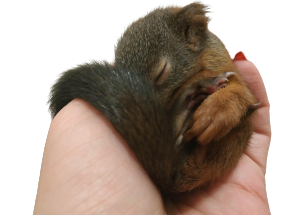

Rólunk
Tevékenységeink:
szaktanácsadás, az állatgondozás módjának bemutatása, megismertetése, a természet és állatvédelemről ismeretterjesztés. A természet- és állatvédelem , gondozás tevékenységek útján korhatár nélkül, az emberek érzelmi, testi, fejlődésének elősegítése, alkotókészségük kibontakoztatása, állóképességük fejlesztése, s az egészséges életmódra nevelésük. A természettudatos életmód, környezetvédelem, természetvédelem népszerűsítése. Mindezekhez intézmények: mentőhely, oktatóközpont, tábor, az önkéntes vállaló emberek részére időszakos szálláshely biztosítása. A munkánk többrétű, tekintettel arra, hogy nem csak madár mentéssel foglalkozzunk, hanem vadmentéssel is, ezáltal az önkéntes segítőkön kívül a mezőőrök, vadászok Nemzeti Park kollégái is segítik a munkánk.
szaktanácsadás, az állatgondozás módjának bemutatása, megismertetése, a természet és állatvédelemről ismeretterjesztés. A természet- és állatvédelem , gondozás tevékenységek útján korhatár nélkül, az emberek érzelmi, testi, fejlődésének elősegítése, alkotókészségük kibontakoztatása, állóképességük fejlesztése, s az egészséges életmódra nevelésük. A természettudatos életmód, környezetvédelem, természetvédelem népszerűsítése. Mindezekhez intézmények: mentőhely, oktatóközpont, tábor, az önkéntes vállaló emberek részére időszakos szálláshely biztosítása. A munkánk többrétű, tekintettel arra, hogy nem csak madár mentéssel foglalkozzunk, hanem vadmentéssel is, ezáltal az önkéntes segítőkön kívül a mezőőrök, vadászok Nemzeti Park kollégái is segítik a munkánk.

Egyöttműködés:
Az alapítvány összedolgozást folytat Elek város önkormányzatával, Szelezsán György polgármester Úr segíti és támogatja munkánkat. Békéscsaba Megyei Jogú Város Önkormányzatával Szarvas Péter polgármester Úr segíti és támogatja munkánkat. kiemelkedően fontos számukra a természet és élőlényeinek védelme, ezáltal a környezetvédelem. A 2023 . évtől Nagyszénás nagyközség Nyemcsok János polgármester Úrral is megállapodás született, összedolgozás terén. Mindkét városban, valamint a nagyközségben az alapítvány kollégái jelen vannak. Az alapítványnál javarészt a természetből bekerült árva vagy sérült egyedek találhatók meg. Éves szinten közel 700- 800 egyed kerül mentésre Csongrád - Csanád vármegye és Békés vármegye területein. A Békés Vármegyei Kormány Hivatallal valamint a Csongrád Csanád Vármegyei Kormányhivatallal együttműködésben. Fok és fokozottan védett egyedek: Fehér gólyák,Kerecsensólyom, Egerészölyvek, fiatal Parlagi sas, valamint sérülésből adódóan bekerült egyéb fajok: őzek, nyestek, rókák, A Remény kórtermek kialakítását követően: Elesett árva vagy sérült cicákat és időközönként a kutyusokat is tudjuk fogadni, a 2022 évben közel 154 macskát kezeltünk, valamint 12 kölyökkutyának adtunk reményt az életre, egy szerető család megtalálására.
Az alapítvány összedolgozást folytat Elek város önkormányzatával, Szelezsán György polgármester Úr segíti és támogatja munkánkat. Békéscsaba Megyei Jogú Város Önkormányzatával Szarvas Péter polgármester Úr segíti és támogatja munkánkat. kiemelkedően fontos számukra a természet és élőlényeinek védelme, ezáltal a környezetvédelem. A 2023 . évtől Nagyszénás nagyközség Nyemcsok János polgármester Úrral is megállapodás született, összedolgozás terén. Mindkét városban, valamint a nagyközségben az alapítvány kollégái jelen vannak. Az alapítványnál javarészt a természetből bekerült árva vagy sérült egyedek találhatók meg. Éves szinten közel 700- 800 egyed kerül mentésre Csongrád - Csanád vármegye és Békés vármegye területein. A Békés Vármegyei Kormány Hivatallal valamint a Csongrád Csanád Vármegyei Kormányhivatallal együttműködésben. Fok és fokozottan védett egyedek: Fehér gólyák,Kerecsensólyom, Egerészölyvek, fiatal Parlagi sas, valamint sérülésből adódóan bekerült egyéb fajok: őzek, nyestek, rókák, A Remény kórtermek kialakítását követően: Elesett árva vagy sérült cicákat és időközönként a kutyusokat is tudjuk fogadni, a 2022 évben közel 154 macskát kezeltünk, valamint 12 kölyökkutyának adtunk reményt az életre, egy szerető család megtalálására.
.jpg)
Az alapítvány növekedése:
A 2021. - évi indulásunkhoz képest bővült, hiszen árva fiókák, sérült madarak és állatok mentésével kezdtük el a munkánkat. Mára örömmel mondhatjuk, a mentés, kezelés, gyógyítás mellett, nagy hangsúlyt fektetünk a felnövekvő nemzedékre. Az oktató termünkben tanóra keretében tudjuk fogadni az óvodás és iskolás gyerekeket, filmvetítés, előadás ismeretterjesztés téren Szentes városából. Módot és lehetőséget tudunk biztosítani a vidéki intézmények számára, csoportos látogatásra, előre bejelentkezett időpontban. Létrehoztuk a madármentés-lélekmentés programunkat, ezáltal sokkal könnyebben tanulnak a gyerekek az egyes veszélyek által okozott sérülésekről. Nagy hangsúlyt fektetünk az egészséges vagy tartósan sérült gyermekek összedolgozására a fogadj el programunk keretében. A problémákkal küzdő gyermekek részére létrehoztuk az állatsimogató részleget amely terápiás céllal is jól működik, de a felelős állattartásról is sokat tanulhatnak a városi gyerekek
.jpg)
Sikereink:
Az alapítvány közel két s fél éves munkája során, a kedves támogatóknak köszönhetően, sokat fejlődött. A Szentes város szívében, csodálatos zöld övezetben található alapítvány, sikeresen megtudtuk építeni röpdéinket, kifutóinkat, valamint a fakkos röpdesorokat és amire nagy szükségünk volt a róka kifutót. Elképzeléseink szerint létrehoztuk a remény kórtermeket, az elesett árva cicáknak és kutyáknak valamint a természetben élő, de sérülten beérkező műtét után lábadozó állatoknak. A kezelőket, amiből jelenleg kettő van, fejleszteni tudtuk, eszközökkel, és bútorzattal, igy mind az alapellátás, mind a kezelés feltételei adottak ahhoz, hogy egy sérült állatot megfelelő ellátásban részesítsünk. A pár órás vagy párnapos egyedeknek inkubátort tudtunk beszerezni, ezáltal a megfelelő hőmérsékletet tudjuk a számukra biztosítani. Az oktató terem berendezése is megtörtént, ezáltal mind az iskolás, mind az óvodás gyerekek számára megfelelő oktató teremmel rendelkezik az alapítvány. A 2022. - évben még közel 5.000000 Ft fejlesztést tudtunk véghezvinni , magánszemélyek támogatásával , valamint nyertes pályázatok által. Bethlen Gábor Alapkezelő Zrt: 150.000 Ft Agrárminisztérium: 1.500.000 Ft Herman Ottó Intézet Nonprofit Kft: 500.000 Ft
.jpg)
Elnök:
Apavári Györgyné vagyok Szentes városában születtem, 1974.05.18 -án. A természet és élőlényeinek szeretetét és óvását, édesapám és nagyapám által szerettem volna tovább vinni, hiszen nagyon sokat tanultam tőlük, igaz kertesházi gyermek voltam, de tavasztól késő őszig lehetőségem volt kint a természetben, a tisza mellett élni, már gyermekkoromban sok kisállat miatt kerestek meg, akkor még a szüleim örömére, jól emlékszem a napra mikor kaszálás következtében mezei nyuszik sérültek meg, és hozzám kerültek, nagy öröm volt számomra, hogy sikerült őket megmenteni, és persze akkor még gyermekként felnevelni, ugyan úgy mint az árva őzgidát, akinek anyját hétévesen láttam ahogy széttépték sajnos a kutyák. Talán itt dőlt el, mivel is szeretnék foglalkozni, ha felnőtt leszek. Azt, hogy az alapítvány elnöke lehetek egyben az alapítóknak köszönhetem, hiszen mindketten ismernek és tudták, addig küzdök egy állatért, még a szív dobog, mert minden egyes állatnak joga van az élethez, függetlenül attól védett vagy sem.
.jpg)